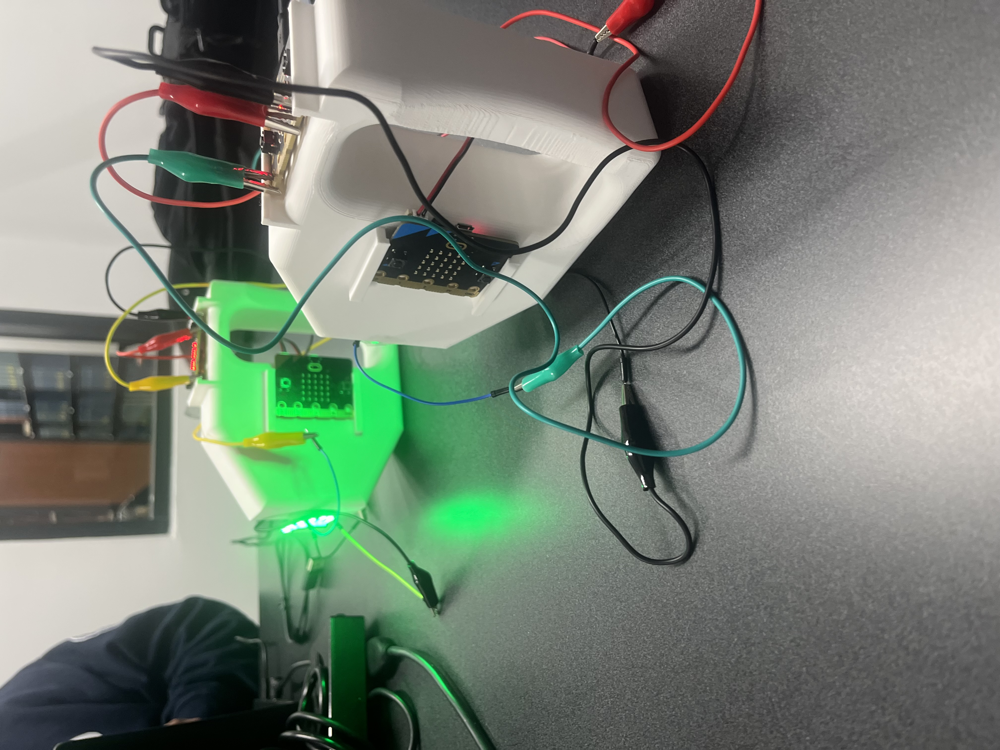

Projects
This is where I post personal and academic projects that challenged me and helped me grow.
Sentinel Prime Fire Truck
.jpg)
Sentinel Prime is a robotic firefighting system and my first ever solo project that I built around an Arduino and programmed in C++ for motor control, servo actuation, and sensor integration. The system features an autonomous fire-extinguishing mechanism with SG90 servos, a flame sensor, a recycled bottle used as a water tank, and a wooden frame. Mounted on a remote control truck, it scans for fire sources and automatically stops to spray water when one is detected. The project combines control, sensor feedback, relay-based motor switching, and practical mechanical integration to create a compact semi-autonomous response.
View Project Code on GitHubLaser Tag System

My team and I built an interactive laser tag game using four BBC micro:bits and two custom 3D-printed blasters, programmed in Python. The system uses radio communication for real-time data exchange, enabling hit detection and health tracking. Each blaster includes a trigger mechanism, an infrared emitter for shooting signals, and an onboard micro:bit for processing and communication. Receiving micro:bits act as health trackers and use LED matrix displays to show remaining health, while sound effects improve gameplay and feedback.
View Project on GitHubSmart Home Automation System

This smart home monitoring and control system was built using a BBC micro:bit and programmed in MicroPython. It integrates environmental sensors such as temperature and humidity sensing, gas detection, and motion detection to track conditions in real time. The micro:bit processes the incoming data and communicates wirelessly through radio or Bluetooth for remote monitoring and automation. The system can trigger practical responses such as turning on a fan, activating lights, or sending alerts when unsafe conditions are detected.
View Project on GitHub